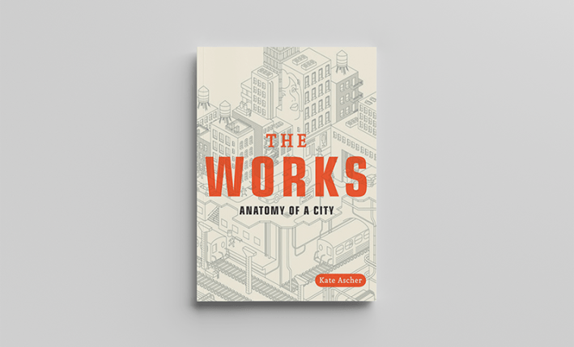
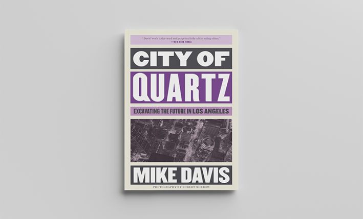
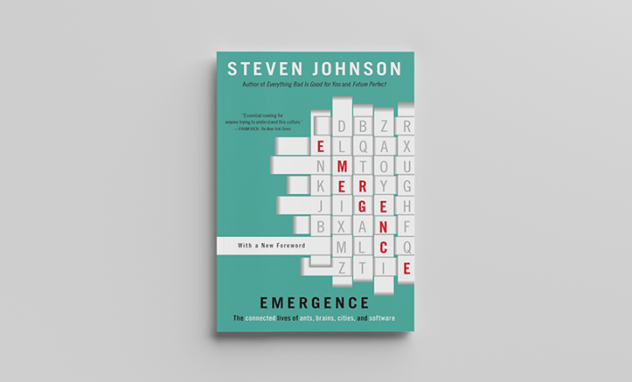
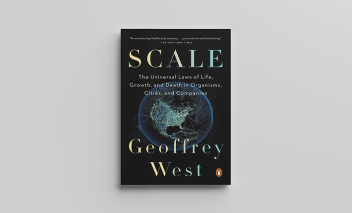
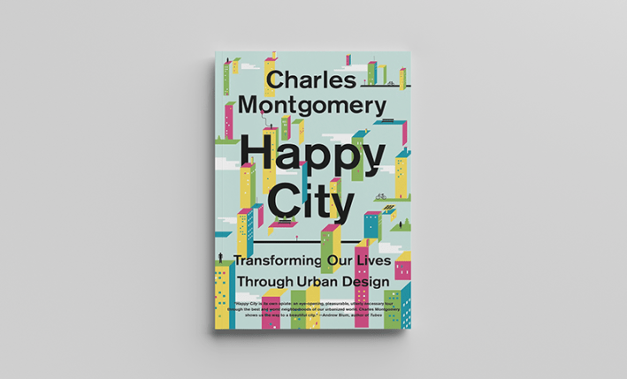
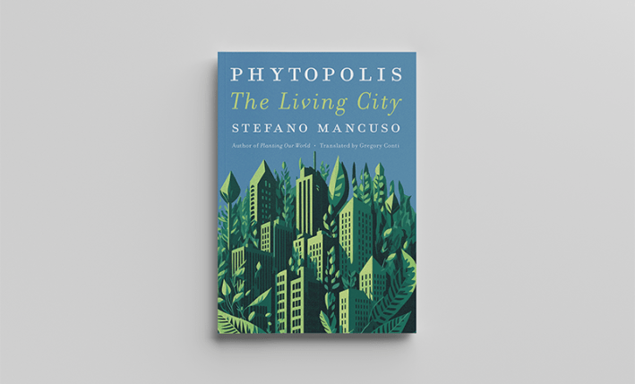
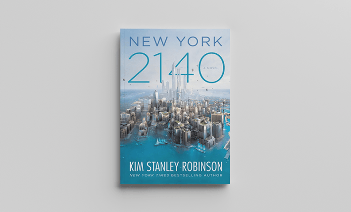

Every week an additional 2 million people, by way of migration and birth, join the urban population on Earth. By the end of the first half of this century, over 6 billion of us will reside in an urban environment. As a metropolitan species, it’s important to know how cities work and work on us.
Many of you may have spent time on the two main thoroughfares of 20th-century urban history: Robert Caro’s The Power Broker, about the rapacious development of New York City by public works czar Robert Moses, and urban activist Jane Jacob’s The Death and Life of Great American Cities, the influential argument for preserving cities on a humanist scale, to allow cities to grow and change with the natural and messy nature of humans themselves. The historic showdown between Jacobs and Moses is engagingly told by Anthony Flint in his 2011 book, Wrestling with Moses.
So, for this list of 10 books, we’ve ventured off the thoroughfares and down some compelling side streets. We begin with some lessons in history and design, before moving into a realm of speculative ideas and visionary approaches to assembling a more sustainable human habitat.
Metropolis: A History of the City, Humankind’s Greatest Invention by Ben Wilson

Penguin Random House
Historian Ben Wilson starts off at the beginning. Uruk, built upon the bogs of the Euphrates, was humanity’s earliest city. Out of Uruk’s bustle emerged religion, writing, and the first great work of literature, The Epic of Gilgamesh. Wilson tours us through dozens more of history’s most pivotal burgs, while arguing that cities were the cardinal invention from which all other great innovations sprung. Babylon gave us hedonism; Athens produced the cosmopolitan; the island confines of Manhattan birthed global finance and culture. Ending with the new mega-hub of Lagos, which today accounts for 60 percent of Nigeria’s productivity, Metropolis makes a case for the centrality of the city to human progress. If you want to know why metros matter, this is a good place to start.
The Works: Anatomy of a City by Kate Ascher

Penguin Random House
I once had a boss who, somewhat out of the blue, asked during a meeting “How the heck does New York City even work? Where does all the water come from?” I wish at the time I had known about Kate Ascher’s The Works, a book that answers this very question. I have to believe everybody who lives in New York City, or has visited it, has asked it. Ascher, a former executive of New York’s Port Authority, with the help of detailed illustrations, pulls back the curtain to reveal the city’s Oz of infrastructure: the subways, bridges, electrical grid, sewer system, garbage disposal, the subterranean steam network, and, yes, where the water comes from. It’s a marvel.
London: The Novel by Edward Rutherfurd
Penguin Random House
This sprawling novelization of London’s history begins with the paleolithic origins of the Thames itself. But things really pick up with the arrival of Emperor Claudius, who established a walled port on the banks of that ancient river. After the Romans came the Normans, the plague, the Great Fire, and the German Luftwaffe. Between these seminal landfalls on England’s capital, the novel follows the oscillating fortunes of seven fictional families, each of whom leaves a lasting impression upon one of the world’s most resilient cities.
Behind the Beautiful Forevers: Life, Death, and Hope in a Mumbai Undercity by Katherine Boo
Penguin Random House
Cities expose their inhabitants to a medley of sights and sounds. But they can also numb their citizens to otherwise egregious scenes. Katherine Boo’s chronicle of life in a Mumbai slum gets its name from a billboard of advertisements plastered on the walls that divide the Mumbai airport from the shantytown below it. Hawking ceramic kitchen tiles that will remain “Beautiful Forever,” this promotional edifice also works to distract the clientele of the area’s luxury hotels from the immiserated squatters living below them. Among the occupants of both the slums and resorts, many have traveled to Mumbai seeking opportunity. But Boo’s gut-wrenching work reminds us that the rewards of the city are often unequally distributed and incommensurate in offer.
City of Quartz: Excavating the Future in Los Angeles by Mike Davis

Verso
Davis, a political activist and urban theorist, who died in 2022, is the radical, angry, fiery-prose flipside of elegant journalist Boo. Some critics called Davis’ 1990 masterwork, City of Quartz, too apocalyptic, but it may be the best book ever on the history of Los Angeles and what engendered its deep and sprawling social polarization. Neither marauding developers nor Hollywood liberals emerge unscathed from Davis’ takedown of the greed, fear, and selfishness that have led to the destruction of public spaces and social intercourse in favor of suburbs, gated communities, and freeway gridlock. It’s trenchant urban analysis with the feel of Blade Runner.
Emergence: The Connected Lives of Ants, Brains, Cities, and Software by Steven Johnson

Simon & Schuster
As much as a professional urban planner might hope to nudge the character of a town in one direction or another, most cities forge “a personality that self-organizes out of millions of individual decisions,” writes Johnson. Just as nobody has to instruct a colony of carpenter ants to bury their queen deep below ground, so too are citizens of a city rarely instructed on where to place their working-class neighborhoods or their bustling business districts. These patterns, like so many others common to nature, emerge from the behaviors of myriad localized individuals. Johnson’s farseeing book on these emergent systems draws perceptive connections between the gestalts of both the natural and artificial worlds.
Scale: The Universal Laws of Growth, Innovation, Sustainability, and the Pace of Life in Organisms, Cities, Economies, and Companies by Geoffrey West

Penguin Random House
Theoretical physicist Geoffrey West, a distinguished professor at the Santa Fe Institute, ventures deeper into the urban jungle to untangle its natural forces. In Scale, he refers to both companies and cities as kinds of superorganisms. West argues that seemingly varied structures distribute energy and resources in compellingly similar ways; notably, relative to their size. Just as metabolic rates of organisms, such as mice and elephants, correlate to their body masses—the smaller the faster—cites scale to their metabolic rates. In the case of cities, though, the bigger the faster. Which explains why all manner of commerce and creativity increases with population size—and why we walk 15 percent faster in Manhattan than in Omaha. Surprises abound—do you know the most abundant business type in Manhattan? Physicians—in West’s grand unified theory of health and sustainability in cities.
Happy City: Transforming Our Lives Through Urban Design by Charles Montgomery

Macmillan Publishers
Most urban planning is guided by an evolving matrix of incentives that may include cost, politics, and practicality. But basic happiness fails to factor into the equation. And when it does, many builders simply equate happiness with open space and sprawl. But according to urbanist Montgomery, cities do far more to cultivate satisfaction for their citizens, namely by creating structures that foster connection rather than isolation. Drawing on research into happiness from psychology and neuroscience, Montgomery’s book contends that a more connected citizenry will also be more productive, prosperous, and better equipped to battle the downsides of urbanization, including the burgeoning dangers of climate change.
Phytopolis: The Living City by Stefano Mancuso

Penguin Random House
You may think the average botanist wouldn’t have much to say on the topic of urban design. But Italian plant neurobiologist Mancuso proves to be the exception. To resolve the conflict between city and nature, the cities of the future, he tells us, “will have to bring nature back inside our new habitat, transforming cities into phytopolises (phyto, or plant + polis, or city), living cities in which the relationship between plants and animals approaches the relationship that we find in nature: 86.7 percent plants and 0.3 percent animals (humans included).” Mancuso’s musings on architecture, art, and urban history from a botanical perspective are nothing short of original.
New York 2140 by Kim Stanley Robinson

Hachette Book Group
Where is “the greatest city in the world” headed in the 22nd century? Science-fiction author Kim Stanley Robinson told Nautilus that “fiction has the thick texture of a speculation that in science might just be a single sentence.” Science tells us that sea levels could rise up to seven feet by the beginning of the 2100s. Robinson’s New York 2140 paints a vivid picture of Manhattan, which is submerged Venice-style on every street below Times Square. But the town is far from abandoned. Rather, like so many other great cities struck by calamity and change, those living in Robinson’s futuristic Big Apple have learned to adapt to this new climate reality, even if it means taking a boat from their home in Chelsea to their finance job in FiDi. Robinson shows that, for all their flaws and failures, cities are resilient. And make us more resilient, too. 
Lead image: vipman4 / Adobe Stock